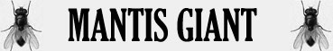

Stretta per Divorare;
Attacco Veloce Superiore;

|
|
Ambiente/Habitat | Jungla / Paludi |
| Frequenza | Rare / Very Rare | |
| Organizzazione | Solitario | |
| Periodo di Attività | Qualsiasi | |
| Dieta | Carnivora | |
| Intelligenza | Animal Intelligence (1) | |
| Punti Combattimento | Nessuno | |
| Tesoro | Tesoro Occasionale | |
| Allineamento Dominante | Neutrale | |
| Numero di Apparizione | 1 | |
| Classe Armatura | 2 [10 base, -7 corazza, -1 destrezza] | |
| Movimento | 8 esagoni /Nuotare 8 esagoni | |
| Dadi Vita | 12 | |
| Thac0 | 8 | |
| Numero di Attacchi | Chela / Chela / Morso | |
| Danni | 1d12+3 (Taglio) / 1d12+3 (Taglio) / 2d4+2 (Taglio) | |
| Poteri Offensivi | Istinto Predatorio; Stretta per Divorare; Attacco Veloce Superiore; |
|
| Poteri Difensivi | Nessuno; | |
| Poteri Generici | Nessuno; | |
| Vulnerabilità | Nessuna; | |
| Resistenza alla Magia | Nessuna; | |
| Sensi | Vista Comune; Sensi Superiori; | |
| Dimensioni | Gargatuan (12 m. lunghezza) | |
| Morale | Champion (16) | |
| Valore in Punti Esperienza | 8867 |
| MODIFICATORI AI TIRI SALVEZZA | |||||||||||||||||||||||
| COR | 0 | 35 | ENV | 0 | 36 | MAG | 0 | 51 | MAL | 0 | 34 | MEN | 0 | 49 | RIF | +5 | 46 | ROB | 0 | 29 | VEL | 0 | 16 |
Descrizione
X.
Combat
X.
ISTINTO PREDATORIO (Moderate Special Ability): La creatura possiede un forte istinto predatorio, per tale motivo costei riceve un bonus costante di +1 alla Thac0 con i suoi attacchi.
STRETTA PER DIVORARE (Lesser Special Ability): Questa creatura è in grado di utilizzare i propri artigli per stringere l'avversario e morderlo con ferocia. Qualora, infatti, questa creatura colpisce con entrambi gli artigli lo stesso avversario, lo terrà stretto e potrà morderlo con incredibile accuratezza. In particolare, l'attacco simultaneo di morso eventualmente effettuato contro il medesimo avversario riceverà un bonus di +4 al tiro per colpire e di +2 al dado base delle ferite.
ATTACCO VELOCE SUPERIORE (Superior Special Ability): Questa creatura è in grado di effettuare i propri attacchi più velocemente del normale. Costei quindi riceve un bonus all'iniziativa dei propri attacchi pari a - 4, fermo restando il limite minimo di +1 al fattore iniziativa del proprio attacco. Inoltre, qualora i tiri di iniziativa sugli attacchi effettuati dalla creatura abbiano un risultato superiore, questi saranno considerati pari a 8.
Habitat/Society
X.
Ecology
X.
Mystical Resource Sourge (Sangue) Quantità: 3, Presenza 33% - Scuola di Magia : Alteration - Qualità della Risorsa: Common.